कक्षा 11 राजनीति विज्ञान (राजनीतिक सिद्धांत)
अध्याय 18: धर्मनिरपेक्षता
(SECULARISM)
धर्मनिरपेक्षता का अर्थ, परिभाषा एवं धार्मिक वर्चस्व के रूप (अंतर-धार्मिक व अंतः-धार्मिक)
धर्मनिरपेक्षता वह राजनीतिक व नैतिक सिद्धांत है जिसके अंतर्गत राज्य का अपना कोई आधिकारिक धर्म नहीं होता, राज्य सभी धर्मों के नागरिकों को समान अधिकार देता है और किसी भी धर्म के आधार पर भेदभाव नहीं करता।
📌 मुख्य सैद्धांतिक परिभाषा: "धर्मनिरपेक्षता एक ऐसा मूल्यवान सिद्धांत है जो समाज में अंतर-धार्मिक (Inter-religious) और अंतः-धार्मिक (Intra-religious) वर्चस्व का विरोध करता है और सभी व्यक्तियों को अंतःकरण व उपासना की स्वतंत्रता की गारंटी देता है।"
1.1 धर्मनिरपेक्षता के तीन बुनियादी उद्देश्य:
- 1. धार्मिक उत्पीड़न पर रोक: किसी भी नागरिक को उसके धर्म के कारण प्रताड़ित या बहिष्कृत नहीं किया जा सकता।
- 2. धार्मिक स्वतंत्रता: प्रत्येक नागरिक को अपनी आस्था चुनने, बदलने और पालन करने का पूर्ण अधिकार।
- 3. राज्य की निष्पक्षता: सार्वजनिक नौकरियों, शिक्षा और कानून में राज्य का सभी धर्मों के प्रति समान व्यवहार।
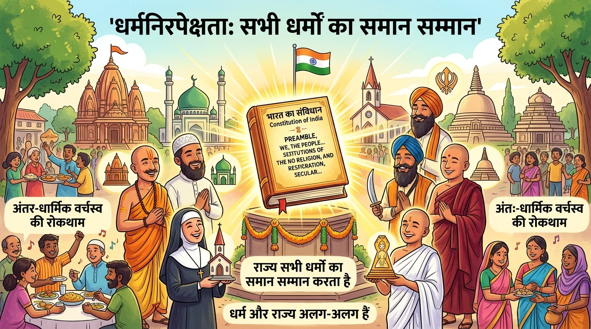
🎨 कार्टून 1 विश्लेषण: धर्मनिरपेक्षता—संविधान के संरक्षण में सभी धर्मों का समान आदर
चित्र का मुख्य संदेश: भारतीय संविधान मंदिर, मस्जिद, गुरुद्वारे और चर्च—सभी को समान सम्मान देता है और हर प्रकार के धार्मिक वर्चस्व को समाप्त करता है।
धार्मिक वर्चस्व के दो रूप: अंतर-धार्मिक और अंतः-धार्मिक वर्चस्व
धर्मनिरपेक्षता केवल दो अलग-अलग धर्मों के बीच शांति तक सीमित नहीं है; यह धर्म के भीतर होने वाले शोषण का भी विरोध करती है:
1.2 वर्चस्व के दोनों रूपों का विश्लेषण:
- 1. अंतर-धार्मिक वर्चस्व (Inter-religious Domination): जब बहुसंख्यक धार्मिक समूह किसी अल्पसंख्यक धार्मिक समूह पर अपनी इच्छा थोपता है या उनके साथ भेदभाव करता है।
- 2. अंतः-धार्मिक वर्चस्व (Intra-religious Domination): जब किसी एक ही धर्म के भीतर पुरोहित वर्ग या उच्च जातियां महिलाओं, दलितों या कमजोर वर्गों का शोषण करती हैं (जैसे अस्पृश्यता, देवदासी प्रथा, तीन तलाक)।
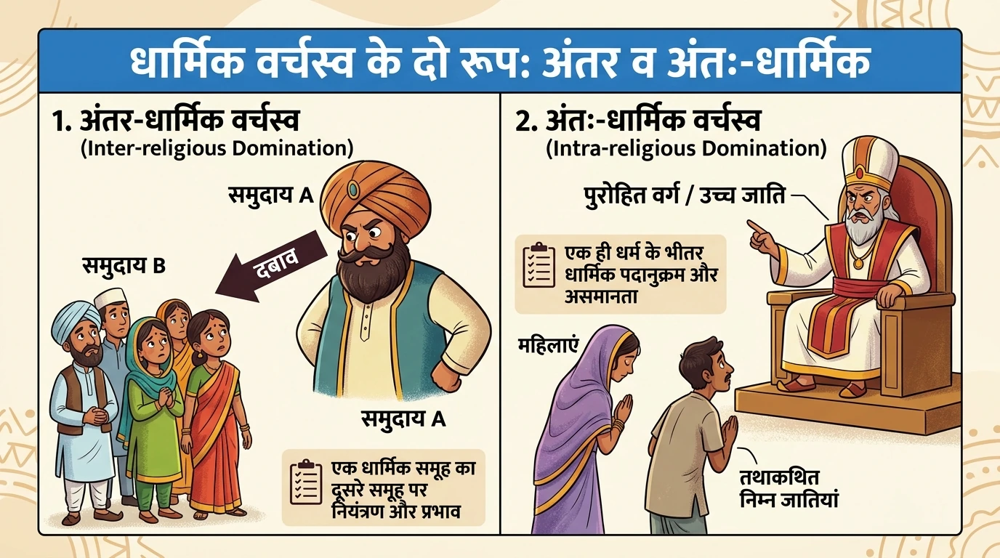
🎨 कार्टून 2 विश्लेषण: धार्मिक वर्चस्व—अंतर-धार्मिक व अंतः-धार्मिक शोषण की रोकथाम
चित्र का मुख्य संदेश: सच्ची धर्मनिरपेक्षता दूसरे धर्मों के दबाव से भी मुक्ति दिलाती है और अपने धर्म के भीतर की असमानताओं व कुरीतियों का भी अंत करती है।
धर्मतांत्रिक राज्य (Theocratic State) बनाम धर्मनिरपेक्ष लोकतांत्रिक राज्य
दुनिया के देशों को उनके धर्म और राज्य के संबंध के आधार पर दो मुख्य श्रेणियों में बांटा जा सकता है:
2.1 धर्मतांत्रिक बनाम धर्मनिरपेक्ष राज्य:
- धर्मतांत्रिक राज्य (Theocratic State): शासन का एक आधिकारिक राज्य धर्म होता है (जैसे सऊदी अरब, पाकिस्तान, वेटिकन)। यहाँ धार्मिक कानून सर्वोच्च होते हैं और अल्पसंख्यकों को दोयम दर्जे का नागरिक माना जाता है।
- धर्मनिरपेक्ष राज्य (Secular State): राज्य का अपना कोई धर्म नहीं होता (जैसे भारत, अमेरिका, फ्रांस)। यहाँ संविधान और कानून सर्वोच्च होता है तथा सभी नागरिक बराबर होते हैं।
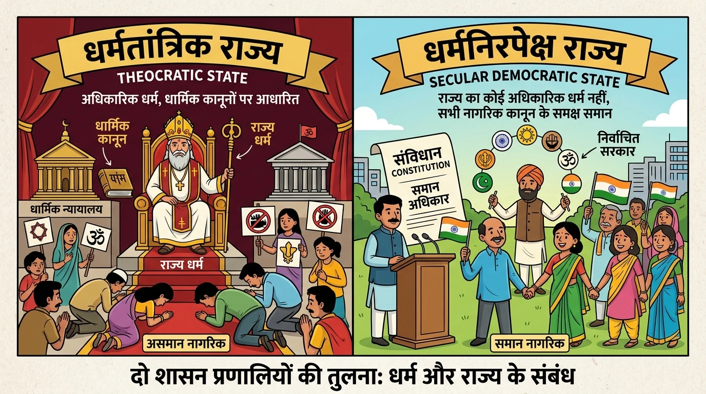
🎨 कार्टून 3 विश्लेषण: धर्मतांत्रिक बनाम धर्मनिरपेक्ष राज्य—दो शासन प्रणालियों की तुलना
चित्र का मुख्य संदेश: धर्मतांत्रिक राज्य नागरिकों में भेदभाव करता है, जबकि धर्मनिरपेक्ष लोकतांत्रिक राज्य संविधान के आधार पर सबको बराबरी का अधिकार देता है।
धर्मनिरपेक्षता का पश्चिमी मॉडल: धर्म और राज्य का पूर्ण अलगाव (Wall of Separation)
अमेरिकी और यूरोपीय देशों में धर्मनिरपेक्षता का अर्थ धर्म और राज्य का सख्त पारस्परिक अलगाव (Strict Mutual Exclusion) है। थॉमस जेफरसन ने इसे 'चर्च और राज्य के बीच की दीवार' (Wall of Separation) कहा था।
3.1 पश्चिमी मॉडल की मुख्य विशेषताएं:
- सख्त अहस्तक्षेप: राज्य धार्मिक संस्थाओं या प्रथाओं में रत्ती भर भी दखल नहीं देता।
- धार्मिक मामलों में कोई सरकारी मदद नहीं: सरकार किसी भी धार्मिक स्कूल या संस्था को कोई आर्थिक सहायता नहीं दे सकती।
- व्यक्तिगत अधिकार पर जोर: यह मॉडल केवल व्यक्ति की स्वतंत्रता की रक्षा करता है, अल्पसंख्यक समुदाय के सामूहिक अधिकारों की नहीं।
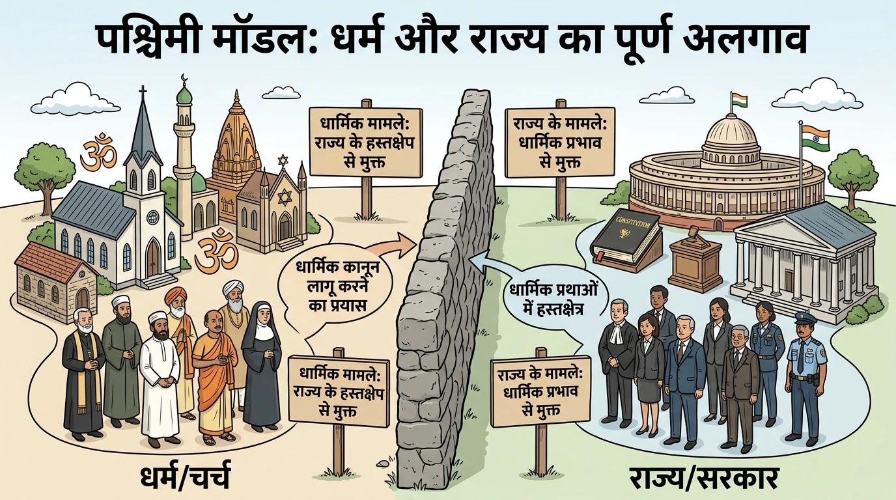
🎨 कार्टून 4 विश्लेषण: पश्चिमी मॉडल—धर्म और राज्य के बीच अलगाव की दीवार
चित्र का मुख्य संदेश: पश्चिमी मॉडल धर्म और राज्य के बीच एक सख्त दीवार खड़ी कर देता है, जहाँ न राज्य धर्म में दखल दे सकता है, न धर्म राज्य में।
पश्चिमी मॉडल की सीमाएं: सामाजिक कुरीतियों में सुधार की असमर्थता
पश्चिमी धर्मनिरपेक्षता की सबसे बड़ी कमजोरी यह है कि सख्त अहस्तक्षेप के कारण राज्य धर्म के नाम पर चलने वाली अमानवीय सामाजिक बुराइयों (कुरीतियों) को कानून बनाकर रोक नहीं सकता।
💡 व्यावहारिक उदाहरण (पश्चिमी मॉडल की लाचारी): यदि भारत में पश्चिमी मॉडल लागू होता, तो सरकार कानून बनाकर अस्पृश्यता उन्मूलन (अनुच्छेद 17), बाल विवाह पर रोक, या मंदिरों में सभी जातियों के प्रवेश का अधिकार लागू नहीं कर पाती, क्योंकि धार्मिक रूढ़िवादी इसे 'धार्मिक स्वतंत्रता में राज्य का दखल' कहकर खारिज कर देते।
4.1 पश्चिमी मॉडल की प्रमुख कमियां:
- सामाजिक सुधार में लाचार: धार्मिक आधार पर होने वाले जातिगत व लैंगिक भेदभाव को दूर करने में असमर्थ।
- सामूहिक अधिकारों की उपेक्षा: अल्पसंख्यक संस्कृतियों और भाषाओं के संरक्षण के लिए कोई विशेष प्रावधान नहीं।
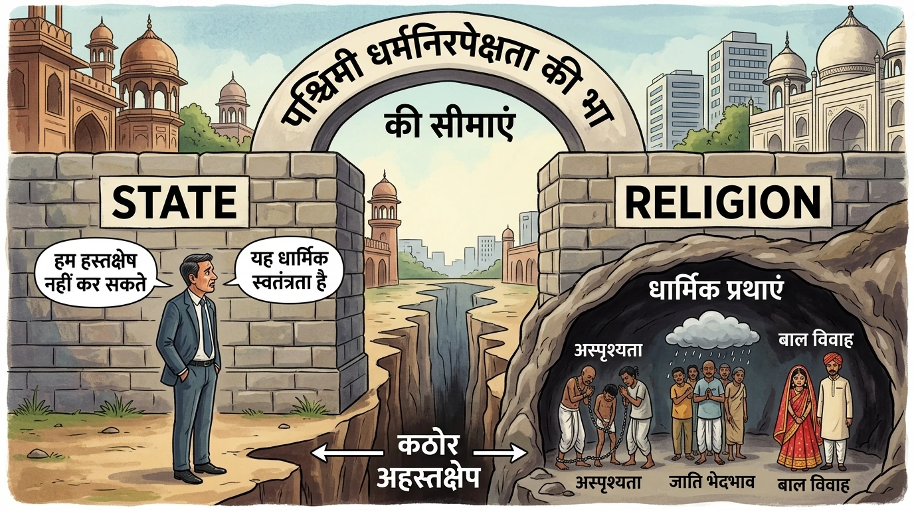
🎨 कार्टून 5 विश्लेषण: पश्चिमी मॉडल की सीमाएं—सामाजिक सुधारों में विवशता
चित्र का मुख्य संदेश: जब राज्य धर्म से पूरी तरह मुँह मोड़ लेता है, तो धर्म के नाम पर कमजोर वर्गों और महिलाओं का शोषण जारी रहता है; इसीलिए भारत को एक भिन्न मॉडल की आवश्यकता पड़ी।
धर्मनिरपेक्षता का भारतीय मॉडल: सैद्धांतिक दूरी (Principled Distance - प्रो. राजीव भार्गव)
प्रसिद्ध भारतीय राजनीतिक विचारक प्रो. राजीव भार्गव के अनुसार, भारतीय धर्मनिरपेक्षता का मूल आधार 'सैद्धांतिक दूरी' (Principled Distance) है।
सैद्धांतिक दूरी का अर्थ: "राज्य सभी धर्मों से समान दूरी बनाए रखेगा, लेकिन यदि किसी धर्म में मानवाधिकारों, समानता या मानवीय गरिमा का हनन होता है, तो राज्य सामाजिक न्याय के लिए सकारात्मक हस्तक्षेप (Positive Intervention) कर सकता है।"
5.1 सैद्धांतिक दूरी के दोहरे आयाम:
- अहस्तक्षेप (Non-interference): सामान्य धार्मिक अनुष्ठानों और पूजा-पद्धति में राज्य कोई दखल नहीं देता।
- सकारात्मक हस्तक्षेप (Principled Intervention): अस्पृश्यता उन्मूलन, दहेज प्रथा निषेध, बाल विवाह रोक और सती प्रथा जैसी कुरीतियों को समाप्त करने के लिए कानून बनाना।
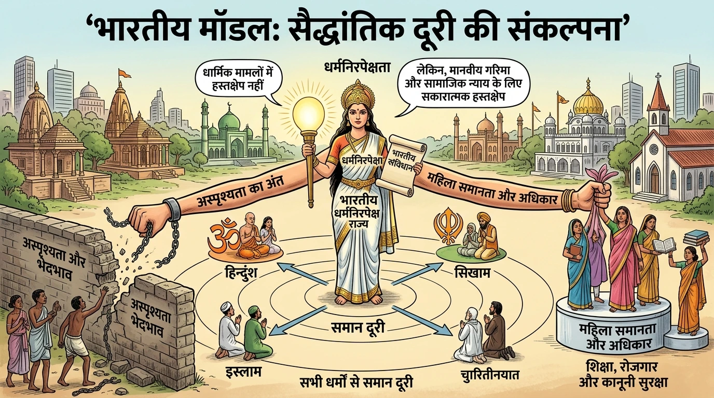
🎨 कार्टून 6 विश्लेषण: भारतीय मॉडल—सैद्धांतिक दूरी और सामाजिक न्याय की ढाल
चित्र का मुख्य संदेश: भारतीय धर्मनिरपेक्ष राज्य सभी धर्मों से समान दूरी रखता है, किंतु अस्पृश्यता और कुरीतियों को मिटाने के लिए सामाजिक न्याय का डंडा भी चलाता है।
पश्चिमी बनाम भारतीय मॉडल का तुलनात्मक विश्लेषण
पश्चिमी और भारतीय धर्मनिरपेक्षता के बीच का तुलनात्मक अंतर आधुनिक राजनीति विज्ञान का सबसे महत्वपूर्ण प्रश्न है:
6.1 प्रमुख तुलनात्मक अंतर:
- अलगाव का स्वरूप: पश्चिम में 'सख्त अलगाव' (कठोर दीवार) है, जबकि भारत में 'सैद्धांतिक दूरी' (लचीला व सुधारात्मक) है।
- अधिकारों का दायरा: पश्चिम केवल 'व्यक्तिगत स्वतंत्रता' देखता है; भारत 'व्यक्तिगत अधिकार' के साथ-साथ 'अल्पसंख्यक समुदायों के सांस्कृतिक अधिकारों' की भी रक्षा करता है।
- सरकारी सहायता: पश्चिम में किसी धार्मिक संस्था को सहायता वर्जित है; भारत में सभी धर्मों के शैक्षणिक संस्थानों को बिना भेदभाव सरकारी अनुदान मिलता है।
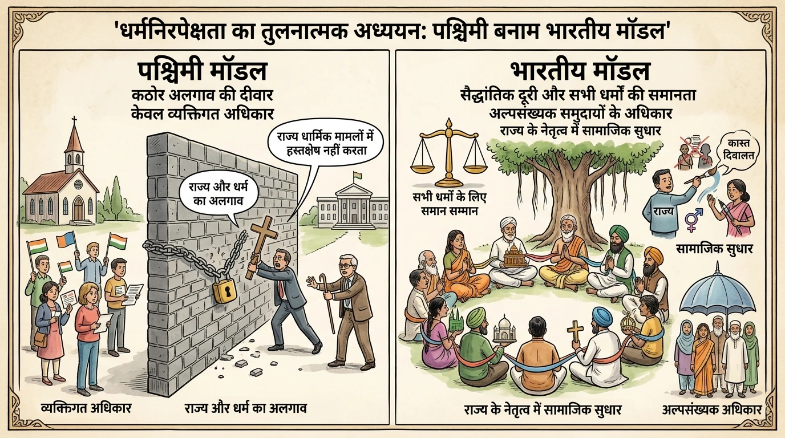
🎨 कार्टून 7 विश्लेषण: तुलनात्मक अध्ययन—पश्चिमी कठोर दीवार बनाम भारतीय समावेशी उपवन
चित्र का मुख्य संदेश: पश्चिमी मॉडल धर्म और राज्य को बंद दरवाजों में कैद करता है, जबकि भारतीय मॉडल सभी धर्मों को समान सम्मान देकर समाज सुधार का नेतृत्व करता है।
धार्मिक स्वतंत्रता का मौलिक अधिकार: अनुच्छेद 25 से 28
भारतीय संविधान के भाग III में धार्मिक स्वतंत्रता को मौलिक अधिकार बनाया गया है:
7.1 प्रमुख संवैधानिक अनुच्छेद:
- अनुच्छेद 25: अंतःकरण की स्वतंत्रता, धर्म को अबाध रूप से मानने, आचरण और प्रचार करने का अधिकार।
- अनुच्छेद 26: धार्मिक मामलों के प्रबंध और संस्थाओं की स्थापना की स्वतंत्रता।
- अनुच्छेद 27: किसी विशिष्ट धर्म के प्रचार या संवर्धन के लिए कर (Tax) देने के लिए बाध्य न करना।
- अनुच्छेद 28: पूर्णतः राज्य निधि से चलने वाले सरकारी शिक्षण संस्थानों में धार्मिक शिक्षा का निषेध।
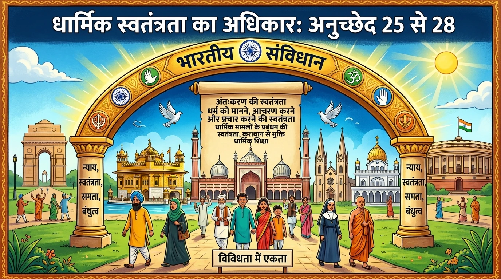
🎨 कार्टून 8 विश्लेषण: अनुच्छेद 25 से 28—धार्मिक स्वतंत्रता का संवैधानिक छत्र
चित्र का मुख्य संदेश: भारतीय संविधान हर नागरिक को अपनी आस्था चुनने और उसका शांतिपूर्वक पालन करने की पूर्ण स्वतंत्रता प्रदान करता है।
अल्पसंख्यकों के अधिकार (अनुच्छेद 29-30) एवं 42वें संविधान संशोधन का प्रभाव
भारतीय धर्मनिरपेक्षता की विशिष्टता यह है कि यह अल्पसंख्यकों की भाषा, लिपि और संस्कृति को बहुसंख्यकों के दबाव से सुरक्षित रखने के लिए विशेष अधिकार देती है:
8.1 अल्पसंख्यकों के अधिकार:
- अनुच्छेद 29: भारत के किसी भी भाग में रहने वाले नागरिकों के वर्ग को अपनी विशिष्ट भाषा, लिपि या संस्कृति को सुरक्षित रखने का अधिकार।
- अनुच्छेद 30: धर्म या भाषा पर आधारित सभी अल्पसंख्यक वर्गों को अपनी पसंद के शिक्षण संस्थान स्थापित करने और उनका प्रशासन करने का अधिकार।
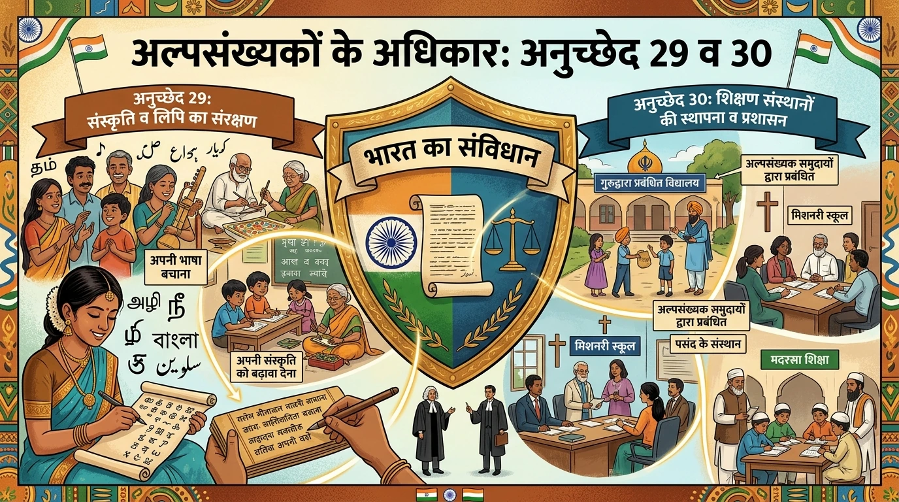
🎨 कार्टून 9 विश्लेषण: अनुच्छेद 29 व 30—सांस्कृतिक स्वायत्तता और भाषाई संरक्षण
चित्र का मुख्य संदेश: अल्पसंख्यक समुदायों की भाषा, संस्कृति और शिक्षण संस्थानों को संरक्षण देकर संविधान विविधता को सशक्त बनाता है।
'पंथनिरपेक्ष' शब्द और 42वां संविधान संशोधन अधिनियम (1976)
मूल संविधान की प्रस्तावना में 'पंथनिरपेक्ष' शब्द नहीं था। 42वें संविधान संशोधन 1976 द्वारा प्रस्तावना में औपचारिक रूप से 'पंथनिरपेक्ष' (Secular) शब्द जोड़ा गया।
8.2 एस.आर. बोम्मई मामला (1994) और पंथनिरपेक्षता:
- संविधान का मूल ढांचा (Basic Structure): सर्वोच्च न्यायालय ने ऐतिहासिक 'एस.आर. बोम्मई बनाम भारत संघ' मामले में फैसला दिया कि पंथनिरपेक्षता संविधान का बुनियादी ढांचा है, जिसे संसद भी समाप्त नहीं कर सकती।
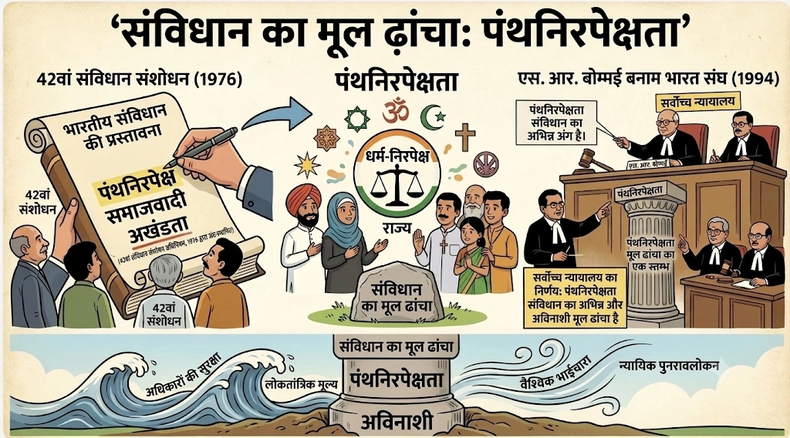
🎨 कार्टून 10 विश्लेषण: संविधान का मूल ढांचा—पंथनिरपेक्षता की अमर आधारशिला
चित्र का मुख्य संदेश: भारतीय संविधान की प्रस्तावना और सर्वोच्च न्यायालय के निर्णय पंथनिरपेक्षता को राष्ट्र की अखंडता का आधार मानते हैं।
आलोचना 1: 'धर्म-विरोधी' (Anti-Religious) होने का आरोप और उत्तर
आलोचना: आलोचक कहते हैं कि धर्मनिरपेक्षता धर्म के विरुद्ध है और लोगों की धार्मिक आस्था को कमजोर करती है।
💡 संवैधानिक उत्तर: भारतीय धर्मनिरपेक्षता धर्म-विरोधी नहीं, बल्कि धार्मिक कट्टरता और वर्चस्व-विरोधी है। यह हर नागरिक को अपनी पूजा-पद्धति की पूरी स्वतंत्रता देती है और सभी धर्मों को संरक्षण प्रदान करती है।
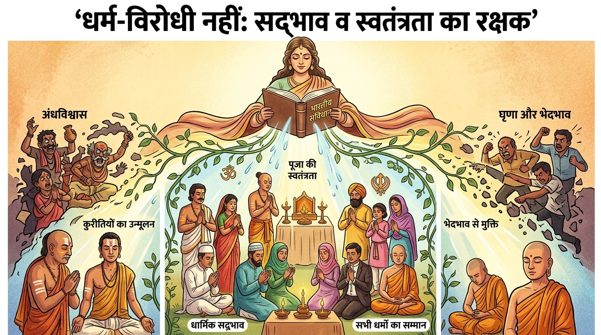
🎨 कार्टून 11 विश्लेषण: धर्म-विरोधी नहीं—धार्मिक सद्भाव और स्वतंत्रता का रक्षक
चित्र का मुख्य संदेश: भारतीय धर्मनिरपेक्षता आस्था का दमन नहीं करती, बल्कि अंधविश्वास और नफरत से धर्म की रक्षा करती है।
आलोचना 2: 'पश्चिमी आयात' (Western Import) का आरोप और उत्तर
आलोचना: आलोचकों का तर्क है कि धर्मनिरपेक्षता ईसाई/पश्चिमी जगत का विचार है, जो भारत की संस्कृति के अनुकूल नहीं है।
💡 संवैधानिक उत्तर: भारत में धर्मनिरपेक्षता की जड़ें प्राचीन हैं। "सर्वधर्म समभाव", अशोक के शिलालेख और कबीर-नानक की साझा विरासत बताती है कि धार्मिक सहिष्णुता भारत की अपनी मौलिक परंपरा है।
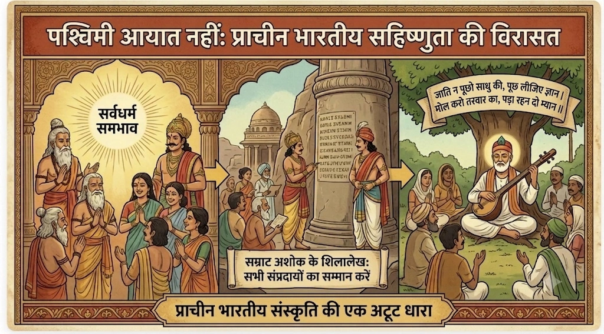
🎨 कार्टून 12 विश्लेषण: पश्चिमी आयात नहीं—भारत की प्राचीन 'सर्वधर्म समभाव' परंपरा
चित्र का मुख्य संदेश: सम्राट अशोक से लेकर संविधान तक—धार्मिक सहिष्णुता भारत की आत्मा में बसी सदियों पुरानी संस्कृति है।
'अल्पसंख्यकवाद/तुष्टीकरण' तथा 'अति-हस्तक्षेपकारी' होने के आरोपों का खंडन
आलोचना: आलोचकों का आरोप है कि धर्मनिरपेक्षता के नाम पर अल्पसंख्यकों को विशेष सुविधाएं देकर बहुसंख्यकों के साथ अन्याय किया जाता है।
💡 संवैधानिक उत्तर: अल्पसंख्यकों को दिए गए अधिकार 'विशेषाधिकार' नहीं, बल्कि समानता सुनिश्चित करने का सुरक्षा कवच हैं, ताकि लोकतंत्र में बहुसंख्यकवाद के दबाव से उनकी भाषा और संस्कृति नष्ट न हो।
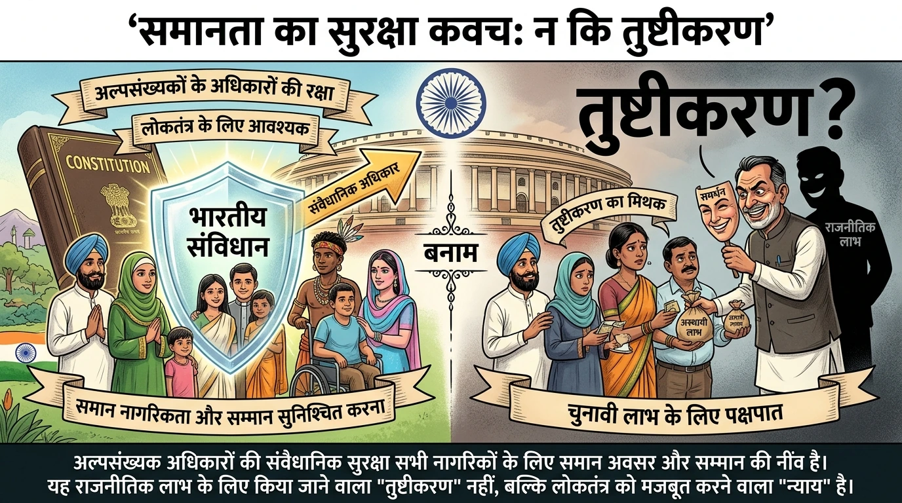
🎨 कार्टून 13 विश्लेषण: तुष्टीकरण नहीं—कमजोरों को बराबरी पर लाने का सुरक्षा कवच
चित्र का मुख्य संदेश: अल्पसंख्यकों को संरक्षण देना लोकतंत्र की मजबूती है, जिससे देश का कोई भी नागरिक असुरक्षित महसूस न करे।
आलोचना 4: 'अति-हस्तक्षेपकारी' (Interventionist) होने का आरोप और उत्तर
आलोचना: यह आरोप लगाया जाता है कि राज्य धार्मिक मामलों में बहुत ज्यादा दखल देता है और परंपराओं को तोड़ता है।
💡 संवैधानिक उत्तर: राज्य का हस्तक्षेप मनमाना नहीं होता; यह केवल मानवीय गरिमा, समानता और सामाजिक सुधार (जैसे बाल विवाह, सती प्रथा व अस्पृश्यता का अंत) के लिए ही किया जाता है।
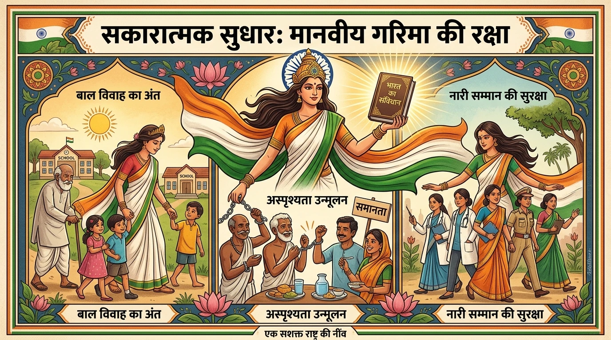
🎨 कार्टून 14 विश्लेषण: मनमाना दखल नहीं—कुरीतियों को मिटाकर मानवीय गरिमा की रक्षा
चित्र का मुख्य संदेश: धर्म के नाम पर शोषण को रोकना राज्य का नैतिक और संवैधानिक दायित्व है।
'वोट बैंक राजनीति' तथा 'असंभव परियोजना' की आलोचनाओं का विश्लेषणात्मक उत्तर
आलोचना: राजनीतिक दल चुनाव जीतने के लिए धर्मनिरपेक्षता का दुरुपयोग करते हैं और धार्मिक समूहों को वोट बैंक बनाते हैं।
💡 संवैधानिक उत्तर: राजनेताओं की अवसरवादिता के लिए सिद्धांत को दोषी नहीं ठहराया जा सकता। समाधान यह है कि मतदाता जागरूक बनें और धार्मिक ध्रुवीकरण के बजाय विकास व अधिकारों पर वोट दें।
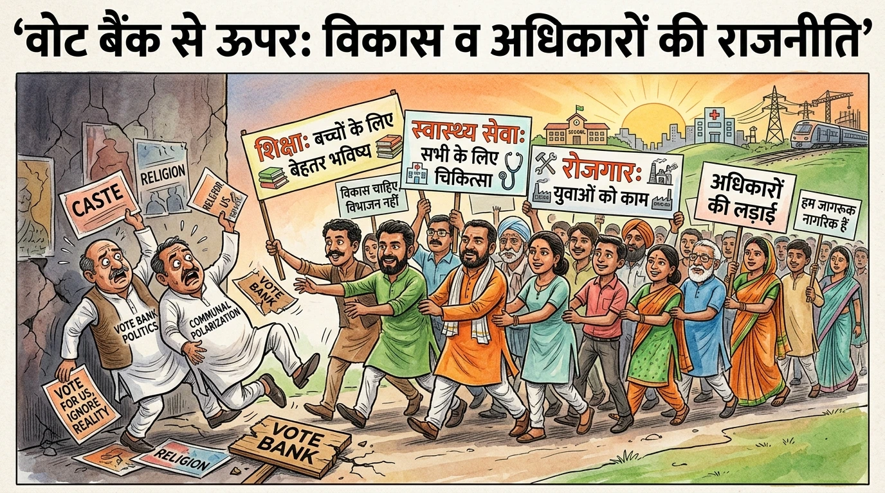
🎨 कार्टून 15 विश्लेषण: वोट बैंक नहीं—जागरूक नागरिकता और विकास की राजनीति
चित्र का मुख्य संदेश: धर्मनिरपेक्षता का असली उद्देश्य सभी नागरिकों का समग्र विकास है, न कि उनका चुनावी इस्तेमाल।
आलोचना 6: 'असंभव परियोजना' (Impossible Project) और उत्तर
आलोचना: आलोचक कहते हैं कि इतने अधिक धर्मों और विविधताओं वाले देश में धर्मनिरपेक्षता कभी सफल नहीं हो सकती।
💡 संवैधानिक उत्तर: पिछले 75+ वर्षों में भारत का जीवंत लोकतंत्र और आर्थिक विकास यह सिद्ध करता है कि बहुधार्मिक समाज में धर्मनिरपेक्षता न केवल संभव है, बल्कि राष्ट्र की एकता की सबसे बड़ी गारंटी है।
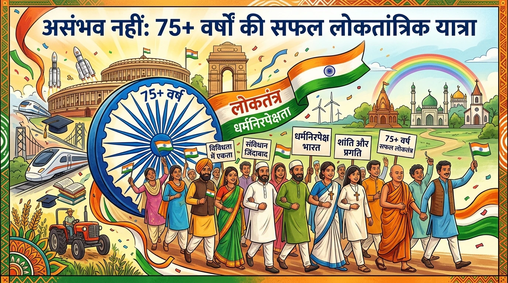
🎨 कार्टून 16 विश्लेषण: असंभव नहीं—75+ वर्षों की सफल लोकतांत्रिक यात्रा
चित्र का मुख्य संदेश: भारतीय धर्मनिरपेक्षता पूरी दुनिया के लिए बहुलवाद और शांतिपूर्ण सह-अस्तित्व की सबसे बड़ी मिसाल है।
पंथनिरपेक्षता में पंथ सुधार: तीन तलाक रोक, सबरीमाला व लैंगिक न्याय
21वीं सदी में भारतीय न्यायपालिका ने धार्मिक स्वतंत्रता को संविधान के अनुच्छेद 14 (समानता) और अनुच्छेद 21 (गरिमापूर्ण जीवन) के अधीन मानते हुए महिलाओं के अधिकारों को प्राथमिकता दी है।
13.1 प्रमुख न्यायिक सुधार:
- शायरा बानो मामला (2017): तीन तलाक (तलाक-ए-बिद्दत) को असंवैधानिक घोषित करना।
- सबरीमाला मामला (2018): पूजा स्थलों में सभी आयु की महिलाओं के प्रवेश की अनुमति।
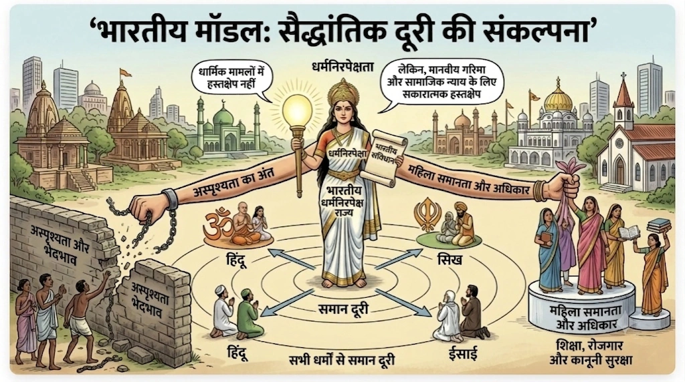
🎨 कार्टून 17 विश्लेषण: धार्मिक सुधार—समानता और महिला गरिमा की विजय
चित्र का मुख्य संदेश: धार्मिक आस्था किसी भी नागरिक (विशेषकर महिलाओं) के बुनियादी मानवाधिकारों और समानता से ऊपर नहीं हो सकती।
अंतर-धार्मिक संवाद एवं डिजिटल युग में भ्रामक अफवाहों पर रोक
धर्मनिरपेक्षता केवल अदालतों और कानूनों से नहीं चलती; इसके लिए समाज में विभिन्न धर्मों के लोगों के बीच आपसी संवाद, समझ और भाईचारे की आवश्यकता होती है।
14.1 अंतर-धार्मिक संवाद के लाभ:
- गलतफहमियों का अंत: एक-दूसरे के त्योहारों, रीति-रिवाजों और पवित्र ग्रंथों को समझना।
- सामुदायिक सौहार्द: संकट और त्योहारों के समय एक-दूसरे का हाथ बंटाना।
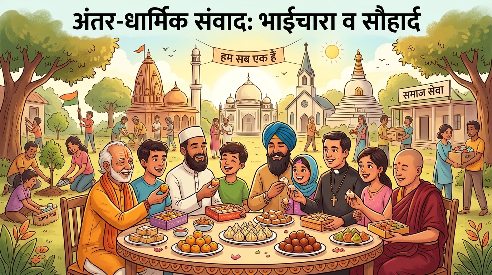
🎨 कार्टून 18 विश्लेषण: अंतर-धार्मिक संवाद—आपसी समझ और साझा सौहार्द
चित्र का मुख्य संदेश: जब विभिन्न धर्मों के लोग बैठकर एक-दूसरे को समझते हैं, तो नफरत की दीवारें स्वतः गिर जाती हैं।
आधुनिक डिजिटल युग में धार्मिक सद्भाव और फेक न्यूज की रोकथाम
सोशल मीडिया के युग में अफवाहों, डीपफेक और भ्रामक पोस्टों द्वारा सांप्रदायिक सौहार्द बिगाड़ने का प्रयास किया जाता है। जागरूक नागरिकता ही इसका सबसे बड़ा रक्षा कवच है।
14.2 डिजिटल युग में नागरिक दायित्व:
- तथ्य जांच (Fact Check): किसी भी भड़काऊ पोस्ट को बिना पुष्टि फॉरवर्ड न करना।
- सद्भाव का प्रसार: डिजिटल मंचों पर एकता, प्रेम और राष्ट्रीय बंधुता का संदेश देना।
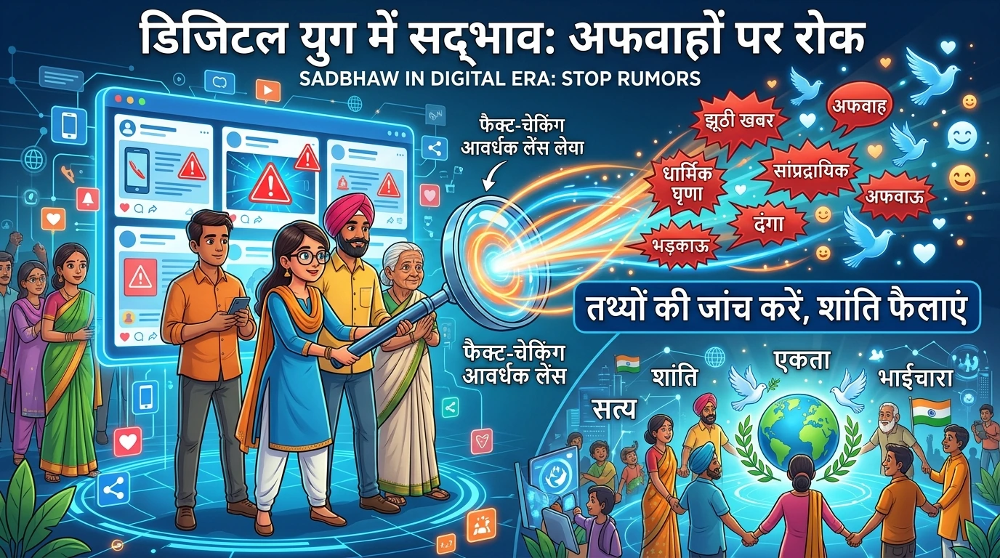
🎨 कार्टून 19 विश्लेषण: डिजिटल सद्भाव—अफवाहों पर रोक और सत्य का प्रसार
चित्र का मुख्य संदेश: डिजिटल युग में सोशल मीडिया पर भ्रामक अफवाहों को रोकना और शांति बनाए रखना हर नागरिक का कर्तव्य है।
अध्याय निष्कर्ष: "सर्वधर्म समभाव" और "सत्यमेव जयते"—सद्भाव ही राष्ट्र की शक्ति
धर्मनिरपेक्षता भारत की कमजोरी नहीं, बल्कि इस प्राचीन और महान राष्ट्र की सबसे बड़ी शक्ति है। "मजहब नहीं सिखाता आपस में बैर रखना" ही भारत का शाश्वत संदेश है।
15.1 अध्याय के सर्वोच्च निष्कर्ष बिंदु:
- सर्वधर्म समभाव: सभी धर्मों का आदर और परस्पर शांतिपूर्ण सह-अस्तित्व।
- संवैधानिक मर्यादा: कानून और मानवाधिकारों की सर्वोच्चता।
- अमर आदर्श: "सत्यमेव जयते" एवं "एक भारत, श्रेष्ठ भारत"!
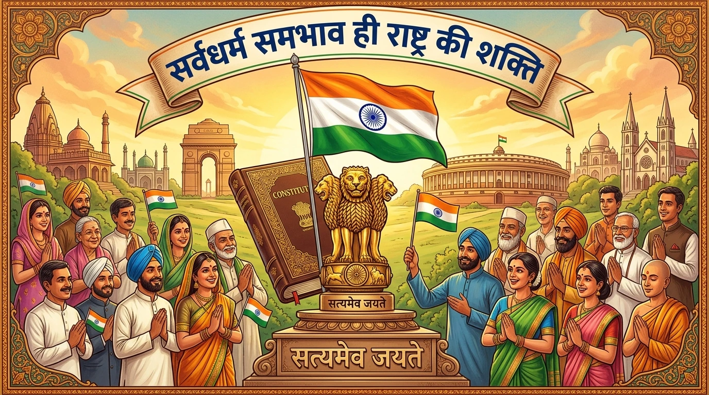
🎨 कार्टून 20 विश्लेषण: अध्याय निष्कर्ष—'सर्वधर्म समभाव' का अमर संदेश
चित्र का मुख्य संदेश: तिरंगे, अशोक स्तंभ और संविधान के नीचे सभी धर्मों की एकता और शांति ही अखंड, समृद्ध और आत्मनिर्भर भारत का आधार है!